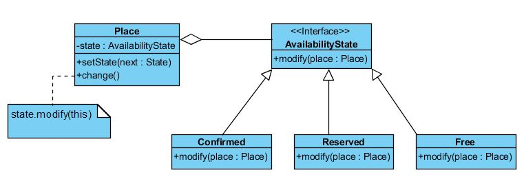
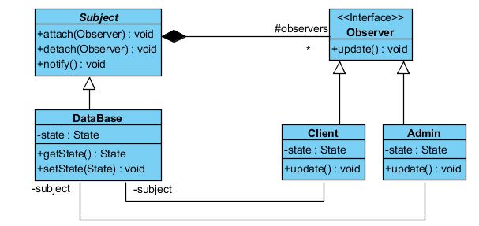
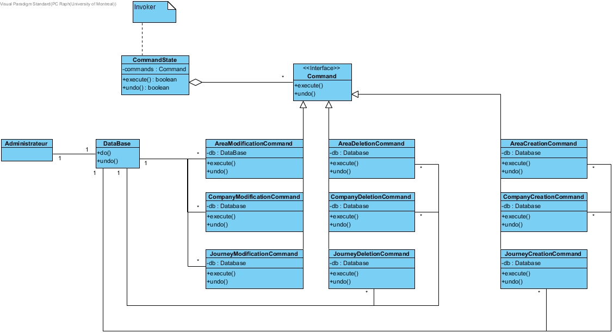
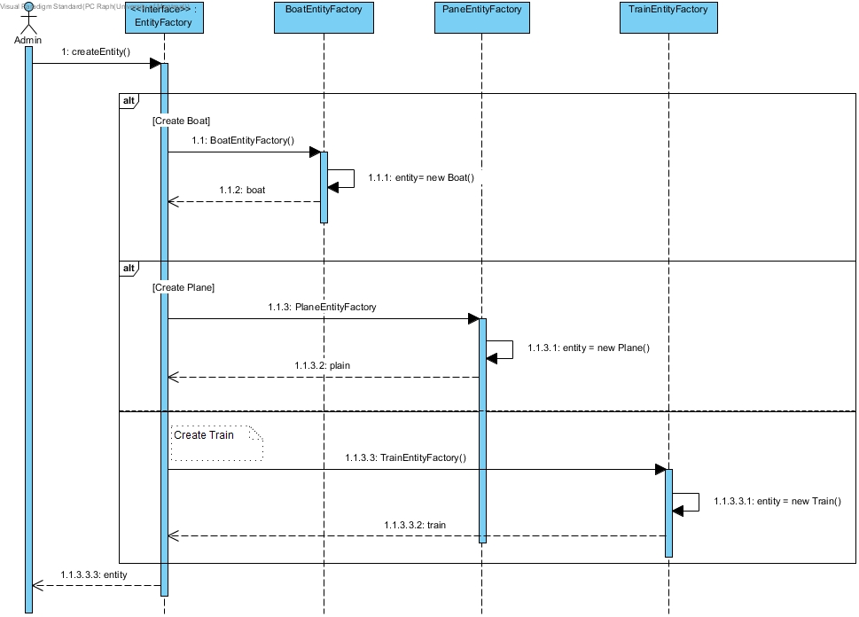
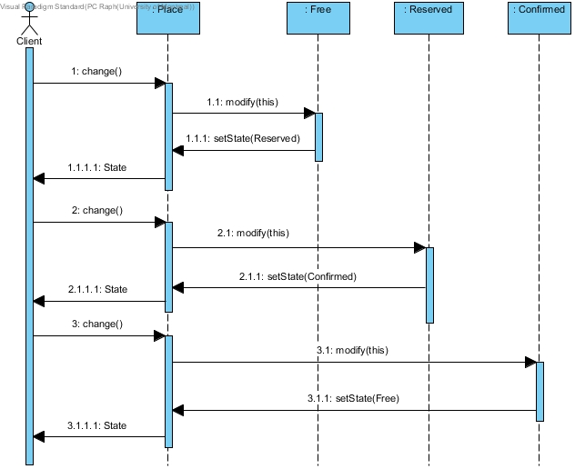
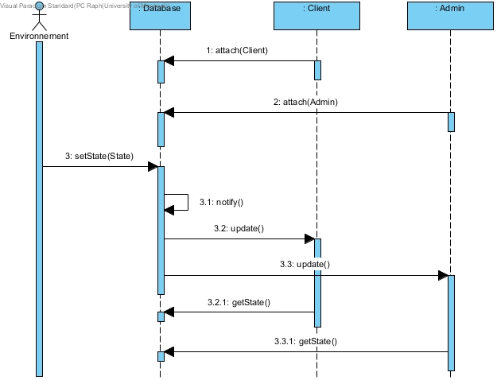
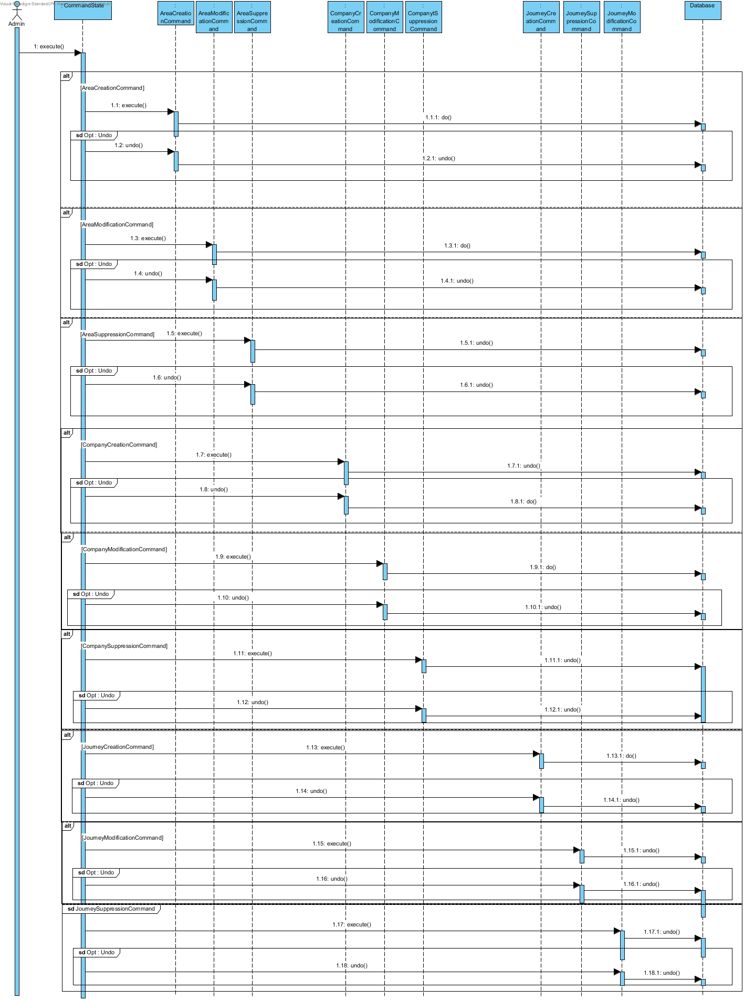
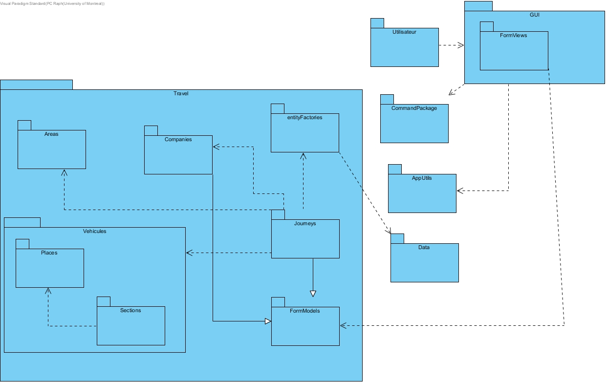
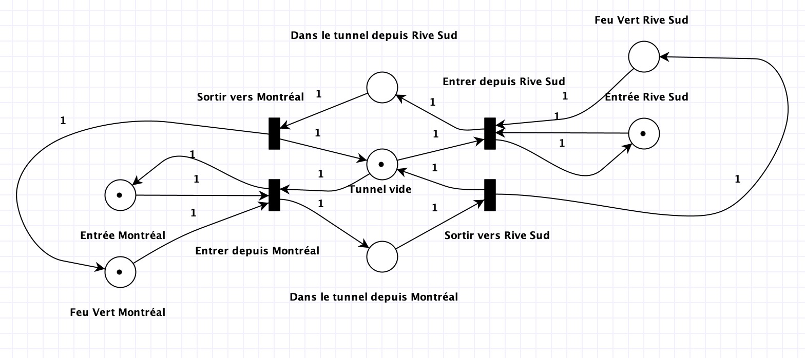
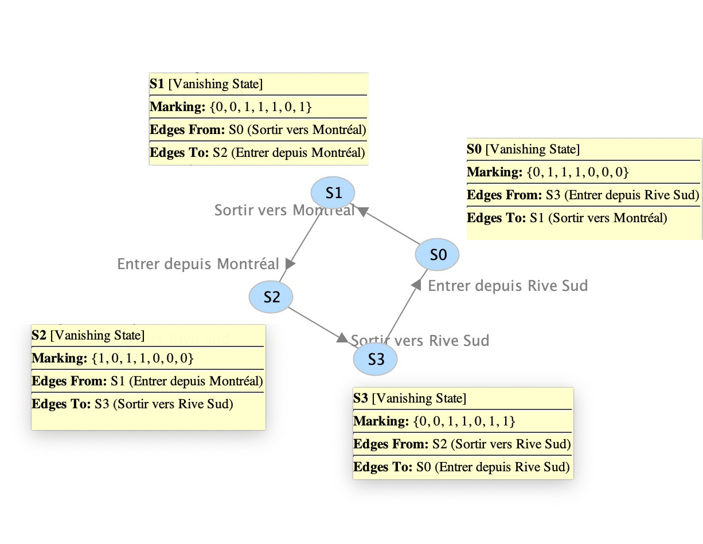

IFT 3911
Devoir Maison 3
14 avril 2019
Informations générales
Raphaël Lajoie
Matricule : 20099664
Courriel : raphael.lajoie@umontreal.ca
Temps mis : ≈ 29 heures
Mathieu Matos
Matricule : 20032753
Courriel : mathieu.matos@umontreal.ca
Temps mis : ≈ 28 heures
Dereck Mcduff
Matricule : 20047549
Courriel : dereck.mcduff@umontreal.ca
Temps mis : ≈ 31 heures
Irvine Potok
Matricule : 20066960
Courriel : irvine.potok@umontreal.ca
Temps mis : ≈ 29 heures
Distribution des tâches
Remise du projet complet Raphaël Lajoie
Remise du rapport par Mathieu Matos, Dereck Mcduff & Irvine Potok
| Tâche | Raphaël | Mathieu | Dereck | Irvine |
|---|---|---|---|---|
| Diagrammes de classe | Conception et élaboration (25%) | Conception et élaboration (25%) | Conception et élaboration (25%) | Conception et élaboration (25%) |
| Diagrammes de séquence ou de collaboration | Conception et élaboration (40%) | Validation (10%) | Validation (10%) | Conception et élaboration (40%) |
| Diagramme de paquets | Validation (15%) | Conception (55%) | Validation (15%) | Validation (15%) |
| Discussion et justification du design | discussion (15%) | discussion (15%) | discussion et rédaction (55%) | discussion (15%) |
| Génération du code et implémentation du système | Implémentation (20%) | Implémentation (30%) | Implémentation (30%) | Implémentation (20%) |
| Réseau de Pétri | Validation,Élaboration (15%) | Élaboration (55%) | Validation,Élaboration (15%) | Validation,Élaboration (15%) |
Vocabulaire
Voici la signification des termes généralisés :- Areas : gare, port, aéroport,etc.
- Compagnies : ligne de train, compagnie de croisière, compagnie aérienne, et.c
- Journeys : trajet, itinéraire, vol, etc.
- Places : sièges, cabine, etc.
- Vehicules : train, paquebot, avion, etc.
Fichiers utilisés
- Voici un lien vers les fichiers Visual Paradigm utilisés (diagrammes de séquences et diagramme de paquets).
- Voici un lien vers notre diagramme de classe logiciel.
- Voir le dossier remis par Raphaël Lajoie pour les autres éléments, dont le projet Java complet.
Diagramme de classes
Ici, certains diagrammes relatifs aux patrons de conception ont été abrégées dans le but de bien isoler le patron de conception identifié. Par exemple, dans le patron de l'observateur, il est clair que les classes "Client", "Admin" et "Database" ne sont pas complètes. Elles ont été simplifiées pour améliorer la lisibilité de ce diagramme.Diagramme de classe pour le patron de fabriques et du singleton
Voici un visuel de ce diagramme :

- Fabrique abstraite
Diagramme de classe pour le patron d'état
Voici un visuel de ce diagramme :

Diagramme de classe pour le patron de l'observateur
Voici un visuel de ce diagramme :

- Version Pull
Diagramme de classe pour le patron de commande
Voici un visuel de ce diagramme et un lien vers celui-ci :

- Version undo
Diagramme de classe pour le patron visiteur
Voici un visuel de ce diagramme et un lien vers celui-ci :

Diagrammes de séquence
Ici, certains diagrammes relatifs aux patrons de conception ont été abrégées dans le but de bien isoler le patron de conception identifié. Ces diagrammes de séquences ont donc été basés sur les diagrammes de classes précédent, et aussi du diagramme logiciel.Diagramme de séquence 1 : patron de fabriques
Voici un lien vers celui du patron de fabriques ainsi qu'un visuel :

Diagramme de séquence 2 : patron d'état
Voici un lien vers celui du patron d'état ainsi qu'un visuel :

Diagramme de séquence 3 : patron observateur
Voici un lien vers celui du patron observateur ainsi qu'un visuel :

Diagramme de séquence 4 : patron de commande
Voici un lien vers celui du patron de commande ainsi qu'un visuel :

Diagramme de paquets
Voici un lien vers le diagramme de paquets ainsi qu'un visuel :

Discussion et justification de la qualité du design
Au début du devoir 3, notre objectif était de corriger nos erreurs par rapport aux devoirs 2 et donc d’améliorer notre design logiciel. Voici des améliorations effectuées.Identification des modules réutilisables
Dans le devoir précédent, il y avait une grande immobilité dans notre conception, car notre nombre de paquets réutilisables était faible (2).Dans ce devoir, nous avons réussis à augmenter notre nombre de paquets réutilisables, soit : « CommandPackage », « App », « Areas » et « Sections », car ils sont indépendants et stables. Bien qu’ils soient assez spécifiques au domaine métier du devoir, c’est-à-dire les problèmes de transport.
Discussion du couplage et de la cohésion des modules
Pour le couplage, on a également augmenté notre proportion par le couplage par données, qui est un bon couplage. On suppose que les paramètres transmis, ainsi que les attributs des objets transmis sont tous utilisés, ainsi on évite le couplage par paquet. Nous avons utilisé plus d’abstraction, pour respecter la loi de Demeter, pour ainsi diminuer le couplage entre les classes.En ce qui concerne la cohésion, on a voulu diminuer globalement la trop forte cohésion entre certains modules. Par exemple, la cohésion au sein des modules « entitesFactory » et « Journey » est très bonne et s’est améliorée, car il s’agit d’une cohésion informationnelle puisque plusieurs actions distinctes sont effectuées, avec un code indépendant pour chaque action et toutes opèrent sur la même structure de donnée.
Justification de l'application des principes de conception
Certains principes de conceptions de classes ont été mieux appliqués que dans le devoir précédent, notamment grâce à l’ajout des patrons de conception. Voici deux exemples concrets d’amélioration de conception .Par exemple, le patron de fabrique abstraite permet de créer des entités (Area, Company, etc.) de manière plus indépendante des abstractions que des implémentations. Donc, le DIP (Dependency Inversion Principle) est utilisé, car on dépend de la classe abstraite « entityFactory ».
Un autre cas d’amélioration est la meilleure application du SIP (Single Responsability Principle) dans ce devoir. Par exemple, nous avions une classe (GestionSociété) qui regroupait des actions sur les places, les sections et les Areas. Ce principe n’était pas respecté, car cette classe pouvait être modifiée pour plusieurs raisons différentes. Dans ce devoir, nous avons donc séparés les actions des places, sections et areas dans des classes et paquets différents, pour donner plus de responsabilité aux classes comme telles (Area, Cabin, Place, Seat, SeatSection, VehiculeSection, etc. ).
L’utilisation de d’autres principes de conception comme l’open/closed principle, l’ Interface Segregation Principle, etc. ont été plus utilisés dans ce travail que dans le précédent, ce qui a améliorer la qualité de notre design.
En somme, de bonnes améliorations ont été apportées à notre design pour ce 3e devoir, comparativement au 2e, démontré notamment par les exemples précédents.
Réseau de Pétri
Le réseau de Pétri est disponible sous forme de fichier PIPE

-
Pour prouver que le tunnel ne peut accueillir plus d’une voiture à la fois, nous devons démontrer que :
M(Dans le tunnel depuis Rive Sud) + M(Dans le tunnel depuis Montréal) <= 1
En considérant le « tunnel vide » comme un état, cela revient à démontrer :
M(Tunnel vide) + M(Dans le tunnel depuis Rive Sud) + M(Dans le tunnel depuis Montréal) = 1
Démonstration :
En considérant individuellement chaque état possible du système figurant dans le graphe d’accessibilité.
En considérant un vecteur de pondération ne contenant des 1 que pour les trois transitions citées plus haut, et des 0 pour le reste.
On observe que pour chaque état, la somme des multiplications entre les éléments du vecteur et leur marquage correspondant, est toujours égale à 1.
Ainsi, M(Tunnel vide) + M(Dans le tunnel depuis Rive Sud) + M(Dans le tunnel depuis Montréal) = 1
Nous avons prouvé que le tunnel ne peut accueillir plus d’une voiture à la fois.
-
Un système non équitable serait un système dans lequel on pourrait entrer plusieurs fois de suite d’un même coté.
Or, nous pouvons observer que ce n’est pas le cas:
- Après être entré depuis Montréal (S2), on ne peut que sortir vers Rive Sud (S3) et laisser une voiture de Rive Sud entrer à son tour (S0).
- Après être entré depuis Rive Sud (S0), on ne peut que sortir vers Montréal (S1) et laisser une voiture de Montréal entrer à son tour (S2).
Notre système impose une politique d’ordre des transitions pour gérer le non-déterminisme, il suit donc une politique équitable.